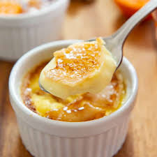

Crème brûlée
de Crème brûlée is een luchtig nagerecht wat goed samen gaat met een zwaar hoofdgerecht als gehaktbrood.
ingredienten
- 1 vanillestokje
- 250 ml halfvolle melk
- 5 middelgrote eieren
- 100 g kristalsuiker
- 50 g witte basterdsuiker
bereidingswijze
- 1.Verwarm de oven voor op 125 °C. Halveer het vanillestokje in de lengte en schraap met een mespunt het merg eruit. Breng de slagroom en melk met het vanillestokje en -merg aan de kook. Laat op laag vuur 5 min. trekken. Verwijder het vanillestokje.
- 2.Splits de eieren en doe de eidooiers met de suiker in een grote kom. Klop door elkaar. De eiwitten gebruik je niet. Schenk de hete room erbij en roer tot het mengsel wat dikker wordt. Verdeel over de schaaltjes. Zet de schaaltjes voorzichtig op een rooster in de oven. Laat de crème brûlée in ca. 45 min. gaar worden en helemaal stollen.
- 3.Laat 30 min. op kamertemperatuur afkoelen en verder opstijven. Dek de schaaltjes af en zet ze minimaal 2 uur in de koelkast. Verwarm de ovengrill voor op de hoogste stand. Neem de schaaltjes uit de koelkast en bestrooi ze met de basterdsuiker. Zet ze vlak onder het grillelement totdat de suiker gesmolten is en bruin begint te kleuren. Let op: dit duurt maar 1 min.

hoofdgerecht
voorgerecht